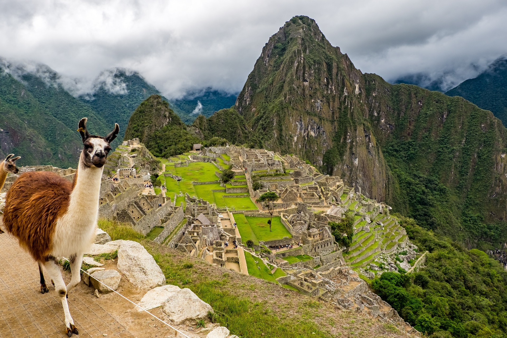
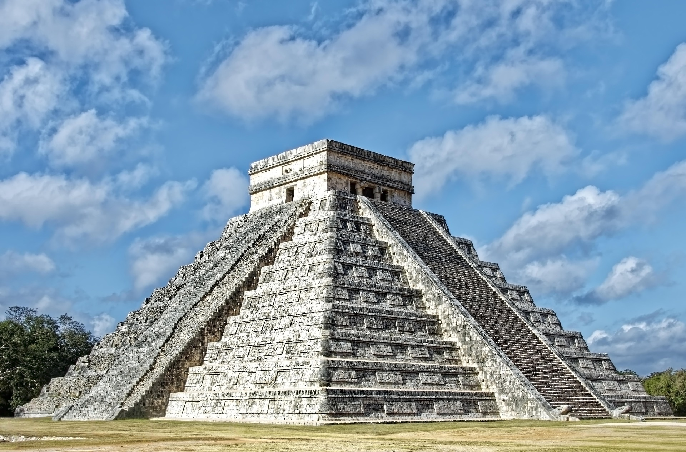
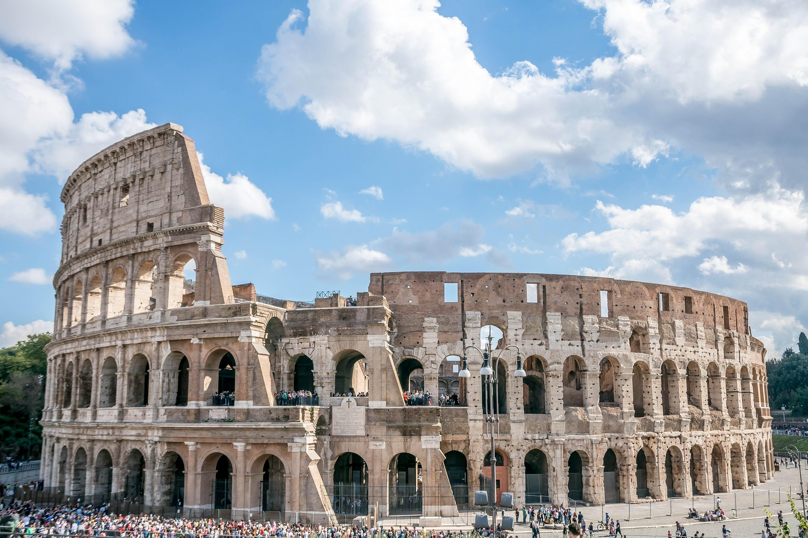
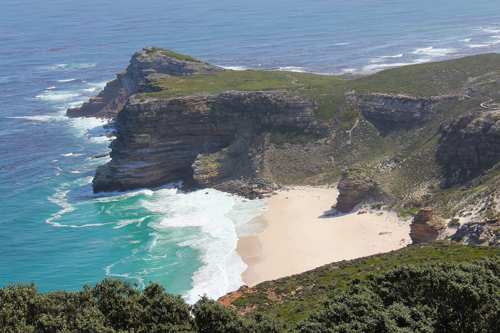
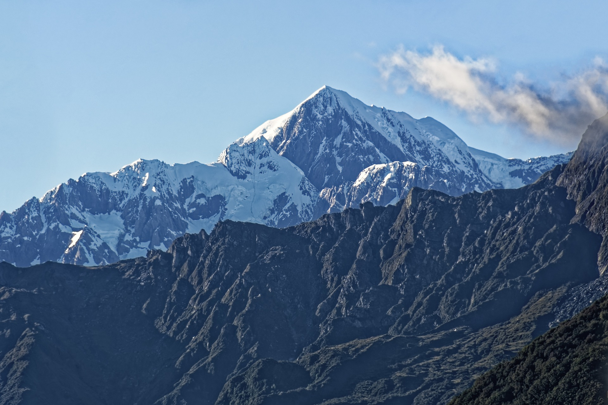
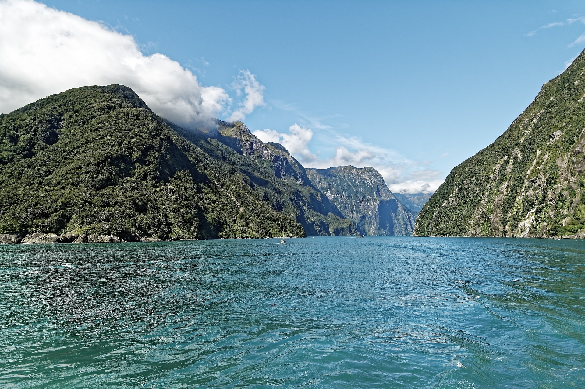
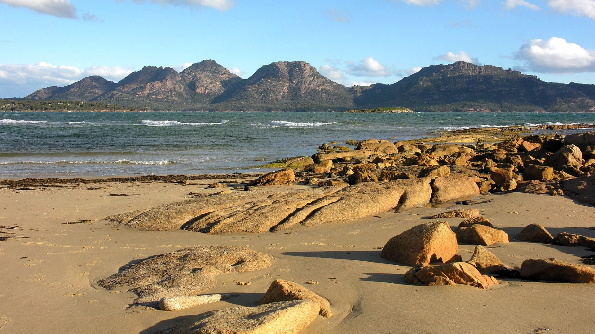

Cristo Redentor, Brasil
Cristo Redentor é uma estátua que retrata Jesus Cristo localizada no
topo do morro do Corcovado, a 709 metros acima do nível do mar,
dentro do Parque Nacional da Tijuca. Tem vista para parte
considerável da cidade brasileira do Rio de Janeiro, sendo a frente
da estátua voltada para a Baía de Guanabara e as costas para a
Floresta da Tijuca. Feito de concreto armado e pedra-sabão, tem
trinta metros de altura (uma das maiores estátuas do mundo), sem
contar os oito metros do pedestal, sendo a mais alta estátua do
mundo no estilo Art Déco.

Times Square, Estados Unidos da América
Famosa pelos seus prédios com telões, a Times Square é a denominação
da área formada na confluência e cruzamento de duas grandes avenidas
da cidade de New York, Estados Unidos; podendo ser definida como uma
grande praça ou largo, composta por vários cruzamentos e esquinas. O
local possui uma das maiores concentrações da indústria do
entretenimento no mundo, além de grandes lojas de famosas marcas
internacionais, e obviamente congrega inúmeros anúncios luminosos de
publicidade que durante a noite tornam-se uma atração peculiar.

Machu Picchu, Peru
Machu Picchu é uma antiga cidadela inca localizada na Cordilheira
dos Andes, no Peru, a aproximadamente 2.430 metros acima do nível do
mar. Conhecida como a "Cidade Perdida dos Incas", ela é um
Patrimônio Mundial da UNESCO e uma das Sete Maravilhas do Mundo
Moderno. É famosa por sua impressionante arquitetura de pedra, com
muros, terraços e rampas que parecem esculpidos na paisagem.

Chichén Itzá, México
Chichén Itzá é um complexo mundialmente conhecido de ruínas maias na
Península de Iucatão, no México. A enorme pirâmide com degraus é
conhecida como El Castillo e domina a cidade antiga de 6,5
quilómetros quadrados, que prosperou de 600 d.C. até ao século XIII.
As esculturas gráficas de pedra sobreviveram nas estruturas, como no
campo de jogo de bola, no Templo dos Guerreiros e na Parede das
Caveiras. Os espetáculos de som e luz à noite iluminam a geometria
sofisticada dos edifícios.

Torre Eiffel, França
A Torre Eiffel, em Paris, é um dos monumentos mais visitados do
mundo e parada obrigatória entre os viajantes que estão na Cidade
Luz. Planejada para a Exposição Universal de 1889, em comemoração ao
centenário da Revolução Francesa, a Torre Eiffel tem 330 metros de
altura, 7,3 mil toneladas de ferro e foi erguida em tempo recorde:
dois anos, dois meses e cinco dias. A imponente obra arquitetônica,
criada pelo engenheiro Gustave Eiffel, foi inaugurada em 31 de março
de 1889 e até hoje causa comoção entre os turistas.

Coliseu, Itália
O Coliseu, também conhecido como Anfiteatro Flaviano, é um antigo
anfiteatro em Roma, Itália. É um dos monumentos mais famosos do
mundo, conhecido por sua arquitetura impressionante e história rica.
Construído no século I d.C., foi palco de diversos eventos, como
combates de gladiadores, execuções e espetáculos públicos.

Acrópole de Atenas, Grécia
A Acrópole de Atenas foi uma fortaleza e base militar durante o
período neolítico, devido à sua posição que oferece uma excelente
vista da terra e do mar. Durante os tempos micênicos, tornou-se um
centro religioso, dedicado ao culto da deusa Atena. Dizem que o
local foi declarado uma província apenas para os deuses por um
oráculo e, portanto, deixou de ser habitado pelo povo. Os três
templos de maior importância, o Partenon, o Erechteion e o Templo da
Nike, foram erguidos durante o período clássico (450-330 a.C.) nos
restos dos templos anteriores. Todos os três são dedicados a
diferentes aspectos da deusa Atena. Os persas destruíram a Acrópole
durante a batalha de Salamina em 480 a.C.

Big Ben, Inglaterra
Big Ben é o apelido do sino gigante localizado na Torre do Relógio
do Palácio de Westminster, em Londres, onde se situa o Parlamento
Britânico. Embora muitas vezes usado para se referir à torre
inteira, Big Ben é na verdade o nome do sino de 13 toneladas e 2,28
metros de altura. A torre, oficialmente chamada de Elizabeth Tower
(anteriormente Torre do Relógio), foi renomeada em 2012 para
indexnagear o Jubileu de Diamante da Rainha Elizabeth II.

Monte Fuji, Japão
O monte Fuji é a mais alta montanha da ilha de Honshu e de todo o
arquipélago japonês. É um vulcão ativo, porém de baixo risco de
erupção. O monte Fuji localiza-se a oeste de Tóquio próximo da costa
do oceano Pacífico da ilha de Honshu, na fronteira entre as
províncias de Shizuoka e de Yamanashi.
Cidade Proibida, China
A Cidade Proibida, localizada em Pequim, China, foi o palácio
imperial das dinastias Ming e Qing e é hoje um museu. Conhecida por
sua arquitetura e importância histórica, a Cidade Proibida foi o
centro do poder político chinês por mais de 500 anos. O título de
Cidade Proibida surgiu pelo fato de somente o imperador, sua família
e empregados especiais terem permissão para entrar no conjunto de
prédios do palácio. Trata-se de uma cidade dentro de outra cidade.
Durante séculos, apenas a família do imperador, além dos oficiais e
empregados mais graduados tinham permissão de entrar no local.

Burj Khalifa, Emirados Árabes Unidos
Burj Khalifa, anteriormente conhecido como Burj Dubai, é um
arranha-céu localizado em Dubai, nos Emirados Árabes Unidos, sendo a
mais alta estrutura e, consequentemente, o maior arranha-céu já
construído pelo ser humano, com 828 metros de altura e 160 andares.

Taj Mahal, Índia
O Taj Mahal é um famoso mausoléu de mármore branco situado em Agra,
Índia, e é reconhecido como Patrimônio Mundial pela UNESCO.
Construído pelo imperador Mughal Shah Jahan em memória de sua esposa
favorita, Mumtaz Mahal, é considerado um símbolo do amor eterno e
uma das Sete Maravilhas do Mundo Moderno.

Pirâmides egípcias, Egito
As Pirâmides egípcias são antigas estruturas de pedra construídas
pela civilização do Antigo Egito, principalmente como túmulos para
faraós e suas rainhas. As mais famosas estão localizadas na
Necrópole de Gizé, perto do Cairo, e incluem as pirâmides de Quéops,
Quéfren e Miquerinos.

Deserto do Saara
O Deserto do Saara é o maior deserto quente do mundo, cobrindo
grande parte do Norte da África. Com uma área de aproximadamente 9,2
milhões de quilômetros quadrados, é conhecido por suas vastas dunas
de areia, temperaturas extremas e uma variedade de ecossistemas. O
Saara é lar de diversas tribos nômades e animais adaptados às
condições áridas. O Deserto do Saara está localizado em vários
países do norte da África. Não é um único país, mas sim uma região
que se estende por partes de Argélia, Chade, Egito, Líbia, Mali,
Mauritânia, Marrocos, Níger, Saara Ocidental, Sudão e Tunísia.

Cabo da Boa Esperança, África do Sul
O Cabo da Boa Esperança é um promontório rochoso na costa atlântica
da Península do Cabo, na África do Sul, conhecido por ser um marco
histórico importante nas rotas marítimas para as Índias. Localizado
aproximadamente 50 km ao sul da Cidade do Cabo, foi descoberto pelo
navegador português Bartolomeu Dias em 1488, que inicialmente o
chamou de Cabo das Tormentas devido às fortes tempestades na região.
Posteriormente, o rei D. João II renomeou-o como Cabo da Boa
Esperança, refletindo a esperança de encontrar uma rota marítima
para a Índia.

Masai Mara, Quênia
Maasai Mara é uma grande reserva nacional de caça no Condado de
Narok, Quênia, contígua ao Parque Nacional do Serengeti, na
Tanzânia. É uma das áreas de preservação da vida selvagem e selvagem
da África, com suas populações de leões, leopardos, chitas e
elefantes-africanos. Também abriga a Grande Migração, que a
consagrou como uma das Sete Maravilhas Naturais da África e como uma
das Dez Maravilhas do Mundo.

Ópera de Sydney, Austrália
A casa da Ópera de Sydney, também conhecida como Teatro de Sydney, é
um dos edifícios de espetáculo mais marcantes em nível mundial, e um
dos símbolos da Austrália, localizada na cidade de Sydney. A
construção, projetada por Jørn Utzon, começou em 1959 e está
localizada sobre a Baía de Sydney.

Monte Cook, Nova Zelândia
O Monte Cook, também conhecido como Aoraki, é a montanha mais alta
da Nova Zelândia, com 3.724 metros de altura. Localizado nos Alpes
Sul, é um destino popular para alpinistas e amantes da natureza. O
Monte Cook é cercado por paisagens deslumbrantes, incluindo
glaciares, lagos e vales. A região é parte do Parque Nacional
Aoraki/Mount Cook, que oferece diversas trilhas para caminhadas e
vistas panorâmicas impressionantes.

Milford Sound, Nova Zelândia
Milford Sound é um fiorde na ilha Sul, na Nova Zelândia, cavado pelo
degelo nas montanhas e pela ação do vento. É o principal ponto
turístico natural da Nova Zelândia. O fiorde se encontra no segundo
ponto mais pluvioso do mundo e tem seu ponto culminante no Pico
Mitre, a 1692 metros de altitude.

Tasmânia, Austrália
Tasmânia é uma ilha e um estado da Austrália, localizada ao sul do
continente australiano. É conhecida por sua natureza intocada,
parques nacionais, fauna única e paisagens deslumbrantes. A Tasmânia
é também famosa por sua culinária, vinhos e produtos locais, como o
queijo e o salmão. É um destino popular para ecoturismo e atividades
ao ar livre, como caminhadas, ciclismo e observação de vida
selvagem.
